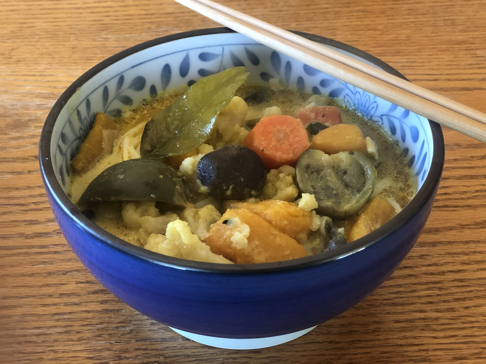

Vegetable Thai Yellow Curry

Ingredients
- 2 onions
- 4 garlic cloves
- 2 inches of grated ginger
- 2 carrots
- 1 kombucha squash
- 1 cauliflower
- 10 thai eggplants
- 10 brown mushrooms
- 10 lime leaves
- 20 cups of water
- 3 cans of coconut milk
- 3 tbps of mushroom powder
- 6 tbps of yellow curry paste
- salt to taste
- vegetable oil
This recipe makes for great comfort food. We usually serve on top of a bed of rice noodle
or thick wheat noodle. The rice noodles can be purchased fresh from the refrigerated section
of our local asian supermarket. They cook in just 1 minute soaking in boiling water!